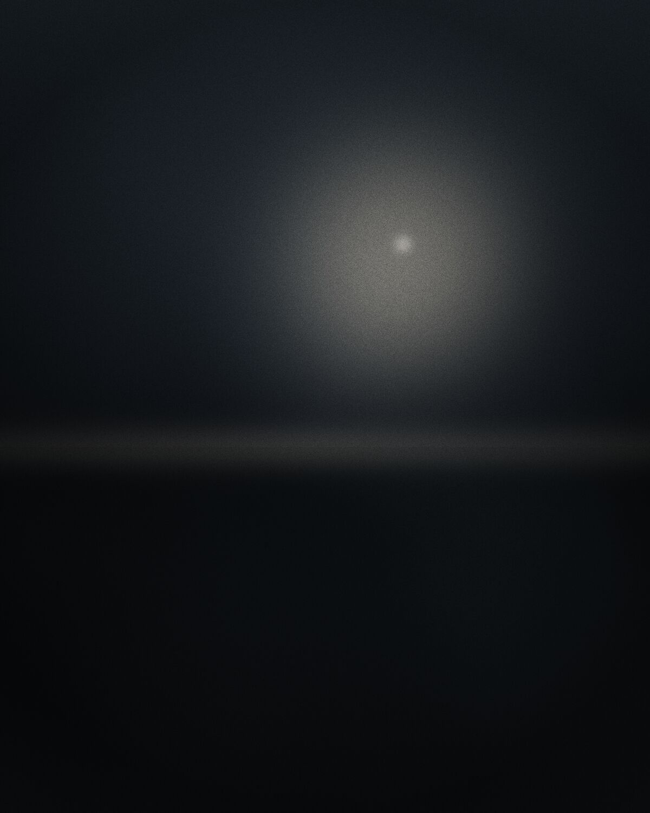

Wedding and brand videographer
Wedding films, brand stories and live events, shot and graded by one pair of hands.
Selected films

Cameras record flat so nothing is lost. The colour, the warmth and the depth are decided afterwards, shot by shot.
Camera originalGraded
Book a consultation
A free 20-minute call about the day, the budget and the dates. Write a few lines and I will answer within two working days.
Request sent. I will answer within two working days.